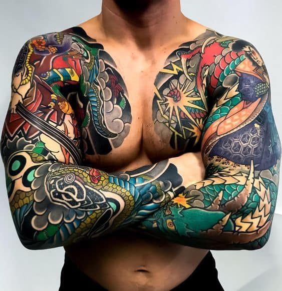

En el mundo del tatuaje existe una gran variedad de estilos con determinadas características que los hace únicos y especiales.Estos estilos poseen formas,colores,texturas y técnicas de tatuar que los diferencian.
Hay estilos que nacieron hace décadas y otros cuyo origen es reciente.
Los estilos mas conocidos son:
Old School o Tradicional
Neotradicional
Blackwork
Japonés
Tribal
Acuarela
ESTILOS DE TATUAJES
OLD SCHOOL O TRADICIONAL
Es uno de los estilos más antiguos y populares que provienen de Occidente.
Se reconocen con facilidad, ya que la línea es
muy sólida y gruesa, además los colores del relleno(si esque lleva color) son homogéneos y muy llamativos.
Los diseños clásicos que se desarrollaron a lo largo de los años como:Rosas, puñales, águilas, barcos, serpientes,cartas, etc, se mantienen aún en vigencia.
NEOTRADICIONAL
Los tatuajes neotradicionales son una evolución del estilo tradicional, incorporando línes más finas, colores más llamativos y detalles más elaborados.
Este estilo captura la escencia del pasado mientras se adapta a las tendencias y gustos contemporáneos.
El estilo neotradicional te ofrece una riqueza visual que cautiva la vista.
BLACKWORK
Este estilo se centra principalmente en el color negro para crear contrastes fuertes y diseños impactantes.Suele usar líneas gruesas y nítidas proporcionandole una definición clara y potente al diseño, pero como es un estilo tan versátil también usa línas finas para obtener diseños más discretos.
JAPONES
El tatuaje japones es uno de los estilos más populares en la actualidad debido a su profundo significado y su abundante iconografía. Se caracteriza por un diseño fuerte y rudo aunque las figuras encierran un estilo grácil y delicado, destaca por sus líneas sólidas; por sus tonalidades verdes, rojas y amarillas; también por sus fondos negros y grises

TRIBAL
El origen de este estilo se encuentra en los símbolos de etnias y tribus indígenas de todo el mundo quienes buscaban simbolizar su fuerza,poder,valentía y espiritualidad mediante ellos.Este tipo de tatuaje se caracteriza por sus líneas gruesas,formas geométricas,patrones intrincados y mayormente se realizan en color negro

LETTERING
Son tatuajes con letras y sus distintas tipografías que crean una palabra,frase o conjunto de frases.
Se da prioridad a cada una de sus letras buscando darles una belleza especial puesto que es un tatuaje muy personal y sentimental.
Se sule usar tinta negra mayormente pero también se puede hacer con tinta de color.